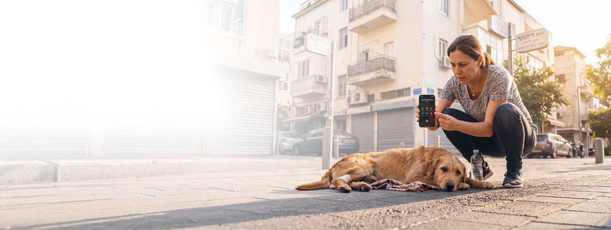

גרסת בטא · חינם
שומרים על מי שאין לו קול.
חיה פצועה, שריפה קטנה, פסולת בשמורה. רואים, מדווחים, והשומרים הקרובים מקבלים את זה מיד. ובטיול: SOS ומדריכי עזרה ראשונה בכיס.

כלב פצוע ברחוב? דיווח אחד, ומי שקרוב יודע.
חיה פצועה, שריפה קטנה, פסולת בשמורה. רואים, מדווחים, והשומרים הקרובים מקבלים את זה מיד. ובטיול: SOS ומדריכי עזרה ראשונה בכיס.
לחצו על כל אחת לפרטים.
מצאתם חיה פצועה או לכודה? מצלמים, מסמנים "חיה פצועה", והמיקום נלכד לבד. מי שקרוב ויכול לעזור רואה את זה על המפה.
שריפת חורש מתחילה קטנה. דיווח מוקדם עם מיקום עוזר לכל מי שבאזור להתרחק ולהזעיק עזרה. במקרה של שריפה, חייגו 102.
שקיות, פסולת בניין, נפט בחוף. תיעוד עם תמונה ומיקום, כדי שאפשר יהיה לטפל ולנקות.
זרם חזק או מתרחץ בקושי? דיווח מהיר מסמן את המקום למי שעל החוף עכשיו. במצב חירום, חייגו 101 או 100.
מישהו מהקבוצה לא חזר? מסמנים את המקום האחרון שבו נראה, כדי שמי שבאזור ישים לב. וחייגו 100.
עץ שחוסם את השביל, סלע שהתדרדר, גשר שבור. מטיילים אחרים יראו לפני שהם יוצאים לדרך.

כלבים, חתולים וחיות בר שצריכים יד.

צבי ים, דגים ועופות שנלכדו בפסולת.

והאנשים שיוצאים ליהנות מהם.

לא. SH✡MER Nature חינם.
כן. SH✡MER Nature היא אפליקציה נפרדת לטבע, לבעלי חיים ולטיולים, מאותה משפחה. כבר יש לך חשבון SH✡MER? אפשר להתחבר איתו.
אנחנו בגרסת בטא. באנדרואיד מורידים קובץ התקנה ישירות מכאן. באייפון מוסיפים למסך הבית מ-Safari, והאפליקציה מתעדכנת לבד.
דיווחים הם אנונימיים, אלא אם בחרת אחרת. המספר שלך משמש לאימות ולשליחת עזרה, אף פעם לא לשיווק. מדיניות הפרטיות
לא. SH✡MER Nature עוזר לאנשים קרובים לדעת ולעזור, אבל לא מזעיק רשויות בשבילך. במצב חירום חייגו 100, 101 או 102.
